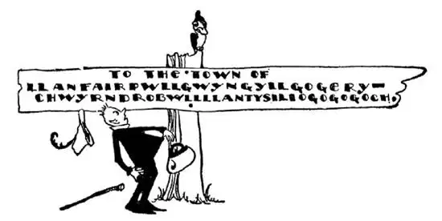
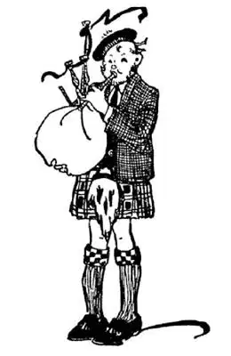
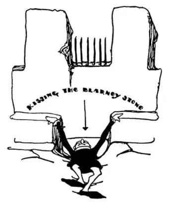
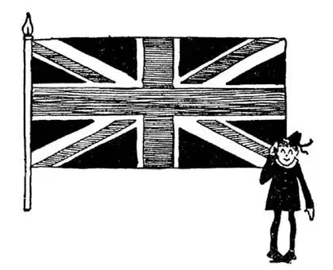
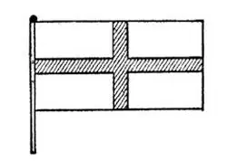
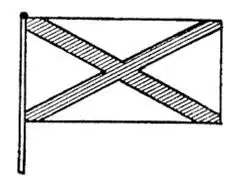
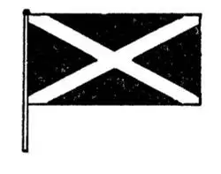

27
The Englishman’s Neighbors
英格兰人的邻居

HERE is the longest name I know. It has fifty-eight letters. It is LLANFAIRPWLLGWYNGYLLGOGERYCHWYRNDROBWLLLLANTYSILIOGOGOGOCH. It looks as if a child had been playing on a typewriter and had pounded out the letters at random. But it is a real name, the name of a town in Wales—a little country on the same island with England. It means “Church of St. Mary, in a hollow of white hazel, near a rapid whirlpool, and near St. Tysilios Church, which is near a red cave.” People who live there or direct letters there usually call this place simply “Llanfairpwll,” for short—and that’s long enough. I’d rather call it “Gogogoch”! Wales is now a part of England, but once upon a time it was not. The people in Wales spoke a different language—a difficult language with many long names hard to pronounce, with many “ll’s” and “w’s” and “y’s” all mixed together.
An English king at last conquered Wales, and in order to make the people he had conquered satisfied and happy he told them he would give them a ruler who was born in Wales and couldn’t even speak a word of English. The people in Wales were pleased at that, for they thought the king would give them one of their own countrymen to rule over them. But the king’s own son was born in Wales—of course, he was a baby and he couldn’t speak a word of English, nor of any other language either. So the king made him the ruler of Wales and the king called him the Prince of Wales. Ever since then the King of England’s first-born son, the one who will be king when his father dies, has been called the Prince of Wales. Nowadays few people of Wales can speak their own “mother-tongue,” for all the children learn English in the schools. Many people study other languages besides their own, but it isn’t necessary to know Welsh in order to travel in Wales, for every one speaks English even if he speaks Welsh too.

A little town in Wales has the longest name I know
威尔士的一个小镇有着我所知道的最长的名字
The game of golf first started in Scotland, the country north of England, on the same island, and some of the finest golf-courses i. t. w. W. are there. Scotland is the land of the Scots and it once had a separate king. The Scotch men used to wear—and some do to-day—shawls of bright-colored squares, and skirts instead of breeches, and stockings rolled down, leaving their knees bare even in the coldest weather—and they have a great deal of cold weather in Scotland. The Scotch families are called Clans and each Clan has a special design called a plaid in which its shawls and skirts are woven. A great many Scotch names and words are different from English, and yet similar. They call a baby a bairn, and boys and girls they call lads and lassies, and a pretty girl they call a bonnie lassie.
The Scots have a peculiar musical instrument called a bagpipe. It’s a bag made of a pig’s skin and it has a pipe to blow it up as you would a balloon, and there are several horns attached to the bag. The player puts the bag under his arm, keeps blowing it up to keep air in it, and at the same time squeezes out the air with his arms so that it blows the horns, making a peculiar squeaky music like a “dying pig.”
Some of the greatest ships in the World such as those that cross the ocean are made in Scotland, at a place called Glasgow on the River Clyde, on the west side. Glasgow is the second largest city on the island, but the capital of Scotland is on the other side, the east coast. It is called Edinburgh. The Presbyterian Church started in Scotland and most of the people in Scotland are Presbyterians, just as those in England are Episcopalians.
We call white potatoes “Irish” because they raise and eat so many potatoes in Ireland, the island to the west of Great Britain. In fact, Ireland is shaped something like an Irish potato. But they had no potatoes at all in Ireland and no one there had ever seen or heard of a potato before Columbus discovered America. Potatoes were born in South America and were brought over and raised in Ireland.
The island of Ireland is divided into two parts. The small northern part is called Northern Ireland and is part of the United Kingdom of Great Britain and Northern Ireland. That means the King of England is king of Northern Ireland as well as of England, Scotland, and Wales.
The Irish are great story tellers and fairy-tale tellers, and they say that once upon a time long ago a giant in the north of Ireland built a magic bridge from Ireland all the way across to Scotland; and to prove the story true they show you thousands of stone posts from the shore out into the sea—all there is left of the bridge—that look as if they had been driven down into the sea by a pile driver. These stone posts running out into the sea are called the Giant’s Causeway, which means the Giant’s Bridge.

He makes a squeaky music that sounds like a“dying pig.”
他演奏出一种短促而尖厉的音乐声，听起来像“垂死的猪”在尖叫
Have you a handkerchief in your pocket? Is it made of linen or cotton? If it’s a “party” handkerchief it is probably made of linen and came from Ireland. Linen is made from the fiber of a plant called flax. Flax is much stronger and more silky than cotton, but it costs more. Flax grows especially well in the country around Belfast, which is the capital and chief city of Northern Ireland. In Belfast, they make more linen, and especially fine linen, than anywhere else i. t. w. W.—handkerchiefs, napkins, and table-cloths.
Most of the people of Northern Ireland are Presbyterians like the Scots or Episcopalians like the English, for their ancestors, many years ago, moved to Northern Ireland from Scotland.
The other part of Ireland, the south part, used to belong to England too. But the Irish people there never liked being ruled by the English and so they started a country of their own, with a city named Dublin for its capital. It is often said that the people in Dublin speak better English than even the people in England do. There is another language used in southern Ireland besides English. It is called Irish and is the language spoken long ago by the ancient Irish people before they spoke English. Some of the Irish coins and postage stamps have Irish words on them.
The country that the Irish formed is a republic with a president, and the King of England now is no longer their king, as kings of England used to be.
Farther south than Dublin is another city with the strange name of Cork, and at some distance another place called Kilkenny. The Irish are famous for their quick wit. Once a man named Kenny was drinking a bottle of ginger-ale, when he swallowed a piece of the cork and nearly choked to death. Some one said to him, “That’s not the way to Cork.” “No,” said Kenny, between coughs, “that’s the way to Kilkenny.”

People come from all over the
World to kiss the Blarney Stone
世界各地的人都来亲吻布拉尼石
Near Cork is an old ruined castle called Blarney. There is a certain stone high up in the wall of this old castle, and the story goes that if you kiss this stone you will be able to say very pleasant and nice things to people. People go long distances to kiss this Blarney stone, although they can only do it by lying on their backs almost upside down. So when a person says something to us that is very flattering, we reply, “Oh, you must have kissed the Blarney stone.”


The Cross of St. George
圣乔治十字

The Cross of St. Patrick
圣帕特里克十字

The Cross of St. Andrew
使徒安德烈十字
Almost all the people of the Republic of Ireland are Roman Catholics, for their families have lived there since before the time of Christ, and missionaries from Rome taught them Christianity over a thousand years ago.
Ireland is often called the Emerald Isle because an emerald is a very beautiful green stone and Ireland has so much rain the country is very green. That’s why green is the national color. Their flag is green, white, and orange, and a kind of clover, called the shamrock, which grows there, is their national leaf.
You have all heard of St. Patrick, who was supposed to have driven the snakes out of Ireland. Well, the British flag has three crosses worked together like a monogram. One is the cross of St. George of England, the second is the cross of St. Andrew of Scotland, and the third is the cross of St. Patrick.
【中文阅读】
下面是我所知道的最长的名字，共有58个字母，译成汉语有28个字：兰韦尔普尔古因吉尔戈格里惠尔恩德罗布尔兰蒂西利奥戈戈戈赫。
这个名字看起来就像是一个孩子在玩打字机，胡乱地敲出了这些字。但这是一个真的名字，是威尔士一个小镇的名字——威尔士和英格兰位于同一个岛上，以前是独立的国家。小镇名字的意思是“位于长满白榛树山谷中的圣马利亚教堂，附近有一个飞速旋转的漩涡，还有一座靠近红色山洞的圣泰西里奥教堂”。住在小镇的人或者写信到那里的人通常把这个地方简称为“兰韦尔普”，用英文写有12个字母——那也够长的了。我倒愿意叫它“戈戈戈赫”！威尔士现在是英国的一部分，但很久以前并不是。威尔士人说的是另一种语言——一种很难的语言，有很多又长又难念的名词，还有很多字母如“ll’s”、“w’s”、“y’s”，混合在一起，让人困惑。
一位英国国王最终征服了威尔士，为了安抚被征服的人民，他告诉他们他将让一个出生在威尔士，且一句英语也不会说的人当他们的统治者。威尔士人听到后感到十分高兴，因为他们以为国王将让一个威尔士人来统治他们。但是国王自己的儿子在威尔士出生了——当然他是个婴儿，不会说一句英语，也不会说其他任何语言。就这样，国王让自己的儿子成为威尔士的统治者，称他“威尔士亲王”。从那以后，英国国王的长子，也就是王位继承人都被授予“威尔士 亲王”这个称号。现在很少有威尔士人会说自己的“母语”，因为所有孩子在学校学的都是英语。很多人除了他们自己的语言之外还学习其他语言，但是到威尔士去旅行没必要懂得威尔士语，因为那里每个人都会说英语，即便他也会说威尔士语。
高尔夫球运动最早起源于苏格兰。苏格兰在英格兰北边，与英格兰同处一个岛，以前是一个独立的国家。苏格兰拥有世界上最好的一些高尔夫球场。苏格兰是苏格兰人的土地，曾经有自己的国王。苏格兰男子过去经常穿着——现在还有人这样穿——颜色鲜艳的方形披风，下身不穿裤子而穿裙子，袜子向下卷起，即使在最寒冷的天气膝盖也是裸露在外——而苏格兰经常有寒冷的天气。苏格兰的家族叫做宗族，各个宗族都穿特定的格子花呢图案的披风和裙子，这种格子花呢叫做彩格呢。苏格兰英语中的很多名称和单词和英语不同，但很相似。他们把“婴儿”称为“小孩”，把“男孩”、“女孩”称为“小伙子”、“小姑娘”。把“漂亮的女孩”称为“好看的姑娘”。
苏格兰人有一种很独特的乐器叫做风笛。风笛的主要部分是一个用猪皮做成的气囊，上面有一根管子，可以向气囊里吹气，让它鼓起来，就像你给气球吹气一样，有几个喇叭连接在气囊上。演奏者把气囊夹在胳膊下，不停地用嘴给它充气，同时用胳膊挤出空气，这样气流就吹响了喇叭，发出一种奇特的短促而尖厉的音乐声，就像“垂死的猪”在尖叫。
世界上一些最大的轮船，比如那些越洋轮船，是在苏格兰一个叫做格拉斯哥的地方造的，格拉斯哥位于克莱德河之滨，在苏格兰的西侧。格拉斯哥是岛上的第二大城市，但苏格兰的首府在苏格兰的另一侧，位于东海岸，叫做爱丁堡。长老会起源于苏格兰，苏格兰大部分人都是长老会教徒，就像英格兰大部分人都是圣公会教徒一样。
我们把白马铃薯叫做“爱尔兰人”，因为爱尔兰人种植很多马铃薯，也吃掉很多马铃薯，爱尔兰是位于大不列颠岛以西的一个岛屿。实际上，爱尔兰的形状看起来就像一个爱尔兰马铃薯。但在哥伦布发现美洲大陆以前，爱尔兰根本没有马铃薯，爱尔兰人也从来没有看过或听说过马铃薯。马铃薯原产于南美洲，后来被带到爱尔兰，当地人才开始种植马铃薯。
爱尔兰岛分为两部分。北部较小的那一部分叫做北爱尔兰，它是大不列颠及北爱尔兰联合王国的一部分。那意味着英国国王不仅管辖着英格兰、苏格兰和威尔士，也管辖着北爱尔兰。
爱尔兰人很会讲故事，也很会编童话，他们说很久以前，爱尔兰北部有个 巨人，建造了一座有魔力的大桥，从爱尔兰一直通到苏格兰；为了证明故事是真实的，他们会指给你看从海岸一直延伸到大海里的数千根岩柱——大桥现在只剩下这些了——岩柱看起来就好像是打桩机打到海里去的。这些延伸到海里的岩柱被叫做“巨人堤道”，就是“巨人桥”的意思。
你口袋里有手帕吗？是亚麻的还是棉的呢？如果是块“宴会”手帕，很可能就是爱尔兰产的亚麻手帕。亚麻布是用一种叫做亚麻的植物的纤维做成的。亚麻比棉更结实、更柔软光洁，但也更贵。贝尔法斯特四周乡村的亚麻长得尤其好，贝尔法斯特是北爱尔兰的首府也是它最重要的城市。贝尔法斯特的亚麻布产量是世界上最高的，尤其是优质亚麻布——亚麻织品有手帕、餐巾和桌布。
北爱尔兰的大部分人像苏格兰人一样，是长老会教徒；或者像英格兰人一样，是圣公会教徒，因为他们的祖先是在很多年以前从苏格兰移居到了北爱尔兰的。
爱尔兰的另一部分，也就是南部，以前也属于英国。但是那里的爱尔兰人从来都不愿意接受英国人的统治，于是他们就成立了自己的国家，把一个叫做都柏林的城市定为首都。人们常说都柏林人说英语比英格兰人说得还纯正。除了英语之外在南爱尔兰，人们还说另一种语言，叫爱尔兰语，是古代爱尔兰人很久以前说的语言，那时，他们还不说英语。爱尔兰一些硬币和邮票上就印有爱尔兰语文字。
爱尔兰人成立的国家是共和国，国家元首是总统，英国国王统治爱尔兰的日子已一去不复返了。
从都柏林再往南有个城市，名字很奇怪，叫科克，不远处还有一个地方叫基尔肯尼。爱尔兰人以头脑机敏而出名。一次一个名叫肯尼的人正在喝一瓶姜味汽水，突然吞下了一片软木塞，几乎窒息而死。有人对他说，“那可不是去科克的路。”“是啊，”肯尼一边咳嗽一边说，“那是去基尔肯尼的路。” [1]
在科克附近有一座古老的城堡，只剩下断壁残垣，叫做布拉尼。在这个古老城堡的高墙上有这么一块石头，相传吻到这块石头后，即口齿伶俐，善于奉承。人们千里迢迢来到这里亲吻布拉尼石，尽管他们向后仰着，几乎头朝下才能吻到这块石头。因此当有人对我们说了奉承话的时候，我们会回答说：“哦，你肯定吻过布拉尼石。”因此，“布拉尼石”常常译为“巧言石”。
爱尔兰共和国几乎所有人都是天主教徒，因为他们的家族自从耶稣诞生之 前就居住在那里，罗马来的传教士在一千多年以前就把基督教传给了他们。
爱尔兰常被叫做“绿宝石岛”，因为绿宝石是一种非常漂亮的绿色宝石，而爱尔兰雨水充沛，绿野遍地。这就是为什么绿色是爱尔兰的民族代表色。爱尔兰国旗是由绿色、白色和橙色组成的，那里生长的一种红花草，叫做三叶草，是爱尔兰的国花。
你们都听说过圣帕特里克，据说是他把蛇驱逐出爱尔兰。英国的国旗是由三个十字交织在一起的，就像交织字母。一个十字代表英格兰的主保圣人圣乔治，第二个代表苏格兰的主保圣人使徒安德烈，第三个代表爱尔兰的主保圣人圣帕特里克。